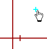
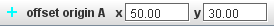
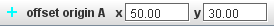

Odmik izhodišča

Odmik izhodišča je točka s koordinatami sveta, definiranimi s strani uporabnika, njen položaj na zaslonu je določen s koordinatnim sistemom videa. To je nasprotno od koraka točkovne mase, pri kateri je njen položaj v koordinatah sveta določen s koordinatnim sistemom.
Če premikamo odmik izhodišča v glavnem oknu z video posnetkom, se s tem premika izhodišče koordinatnega sistema in tako ohranja koordinate sveta, določene odmiku izhodišča. To je uporabno pri indirektnem postavljanju položaja izhodišča, še posebno, če je izhodišče izven same video slike.
1. Prikaz odmika izhodišča
Kliknemo na puščico na gumbu za kalibracijo, ki se nahaja v orodni vrstici. V seznamu kalibracijskih orodij izberemo Odmik izhodišča. Ko to izberemo, lahko prikažemo ali ( skupaj z drugimi izbranimi kalibracijskimi orodji) skrijemo odmik izhodišča tako, da kliknemo na glavni del gumba za kalibracijo.
V začetku je odmik izhodišča postavljen rahlo desno spodaj glede na center video slike. Dodeljene so mu trenutne koordinate sveta za to točko. X in y komponenti koordinat sveta sta prikazani v orodni vrstici.
 

Odmik izhodišča lahko sedaj uporabljamo tako, da spreminjamo njegove koordinate sveta in ga premikamo na želeni položaj na sliki, kot je opisano spodaj.
2. Spreminjanje koordinat sveta ( izhodišče se premika)

Izberemo odmik izhodišča in vnesemo želene vrednosti v polji x in y v orodni vrstici. S tem spremenimo njegove koordinate sveta.
Opomba: spreminjanje koordinat sveta odmika izhodišča premika izhodišče koordinatnega sistema tako, da se položaj značke odmika izhodišča na sliki ne spreminja.
3. Premikanje odmika izhodišča (izhodišče se premika)
Odmik izhodišča izberemo in ga premaknemo na leženo lokacijo na videu v glavnem oknu.
Opomba: Premikanje odmika izhodišča hkrati premika izhodišče trenutnega koordinatnega sistema tako, da ostanejo koordinate sveta odmika izhodišča nespremenjene.
4.Zaklepanje odmika izhodišča
Zaklepanje odmika izhodišča preprečuje spreminjanje izhodišča. Odmik izhodišča zaklenemo tako, da v menuju njegove sledi vključimo lastnost Zaklenjen.